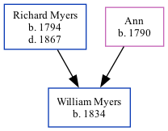

William Myers 1834 -
[ Home ] | [ Calendar ] | [ Surnames Index ] | [ Family History ]The child of Richard Myers and Ann, William Myers was born in North Shields, Tyne and Wear, England in 18341 and baptized in Tynemouth, Tyne and Wear, England on May 26, 1835. Like his father, he was a coal miner. On Mar 30, 1851, he lived at Victoria Inn, South Shields, Tyne and Wear, England1.
Parents
- Richard was born in 1794
- Ann was born in 1790
Citations
- 1851 England, Wales & Scotland Census - Findmypast (was age 17 and the son of the head of the household)
Media
Northumberland and Durham Baptisms - GBPRS/B/303493467/1
Durham Bishop's Transcripts Baptisms - DURHAM/BT/BAP/0681719
England Births & Baptisms 1538-1975 - R_866325107
Family Tree
Generated by Ged2Site. Last updated on Jul 20, 2025